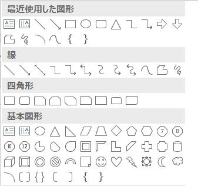

第97回.図形オートシェイプ（Shape）

マクロVBAで、オートシェイプ（図形）を扱う場合の解説です。
オートシェイプ（図形）はShapeオブジェクトであり、
ShapeオブジェクトのコレクションがShapesコレクションになります。
オートシェイプの細部までマクロVBAで扱う為には、多くのオブジェクトを理解する必要があります。
図形オートシェイプ（Shape）関連のオブジェクト群
FillFormatオブジェクト
そして、決してこれで全てではありません、下位のオブジェクは他にもたくさんあります。
マクロの記録で自動記録されたVBAコードを参考にするのが最も早く簡単です。
※ただし、Excel2007を使っている場合は、正しく記録されません。
マクロの記録で作成されるVBAコードを読む時の参考にしてください。
図形オートシェイプ（Shape）の追加
ShapesコレクションのAddShapeメソッドを使います。
Shapesコレクション.AddSahpeメソッド
Shapesオブジェクト.AddShape(Type, Left, Top, Width, Height)
| 名前 | 必須/オプション | データ型 | 説明 |
| Type | 必須 | MsoAutoShapeType | 作成するオートシェイプの種類を指定します。 MsoShapeType列挙で指定します。 |
| Left | 必須 | 単精度浮動小数点型 (Single) | 文書の左上隅を基準に、オートシェイプの境界ボックスの左上隅となる位置をポイント単位で指定します。 |
| Top | 必須 | 単精度浮動小数点型 (Single) | 文書の左上隅を基準に、オートシェイプの境界ボックスの左上隅となる位置をポイント単位で指定します。 |
| Width | 必須 | 単精度浮動小数点型 (Single) | オートシェイプの境界ボックスの幅をポイント単位で指定します。 |
| Height | 必須 | 単精度浮動小数点型 (Single) | オートシェイプの境界ボックスの高さをポイント単位で指定します。 |
戻り値は、追加されたShapeオブジェクトです。
Shapesコレクションの使用例
Dim sp As Shape
Set sp = ActiveSheet.Shapes.AddShape(msoShapeRightArrow, 0, 0, 100, 50)
右向きのブロック矢印を挿入（幅100、高さ50）しています。
テキストボックスの追加
| 名前 | 必須 / オプション | データ型 | 説明 |
| Orientation | 必須 | MsoTextOrientation | テキスト ボックス内の文字列の向きを指定します。 |
| Left | 必須 | Single | 文書の左上隅を基準にしてテキストボックスの左上隅の位置をポイント単位で指定します。 |
| Top | 必須 | Single | 文書の上端を基準にしてテキスト ボックスの左上隅の位置をポイント単位で指定します。 |
| Width | 必須 | Single | テキスト ボックスの幅をポイント単位で指定します。 |
| Height | 必須 | Single | テキスト ボックスの高さをポイント単位で指定します。 |
MsoTextOrientation列挙
| msoTextOrientationDownward | 3 | 下方向。 |
| msoTextOrientationHorizontal | 1 | 水平方向。 |
| msoTextOrientationHorizontalRotatedFarEast | 6 | 水平方向および東アジア言語のサポートを必要に応じて回転します。 |
| msoTextOrientationMixed | -2 | サポートされません。 |
| msoTextOrientationUpward | 2 | 上方向。 |
| msoTextOrientationVertical | 5 | 垂直方向。 |
| msoTextOrientationVerticalFarEast | 4 | 東アジア言語のサポートに必要な場合、垂直方向です。 |
Addtextboxの使用例
Dim sp As Shape
Set sp = ActiveSheet.Shapes.AddTextbox(msoTextOrientationHorizontal, 0,
0, 100, 50)
横書きテキストボックスを挿入（幅100、高さ50）しています。
図形オートシェイプ（Shape）の削除
Shapeオブジェクト.Delete
Deleteメソッドの使用例
図形オートシェイプ（Shape）の編集
もしくは、
Shapeオブジェクトのプロパティで取得される下位のオブジェクトを操作することで行います。
Shapeオブジェクトのプロパティ値の変更
Shapeオブジェクト.Left = Range("B2").Left
B2セルの位置に図形を移動しています。
図形にマクロを登録をします。
プロシージャーが実際に存在するかどうかはチェックされずに登録されます。
Shapeオブジェクトのプロパティで取得される下位のオブジェクトの操作
LineFormatオブジェクト ・・・ 線と矢印の両端の書式を表します。
TextFrameオブジェクト ・・・ レイアウト枠を表します。
TextFrame2オブジェクト ・・・ 2007から追加されたTextFrameの後継オブジェクト。
Shapeオブジェクト.Line.ForeColor.RGB = vbRed
図形オートシェイプ（Shape）の全選択
ActiveSheet.Shapes.SelectAll
ActiveSheet.DrawingObjects.Select
Dim sp As Shape
For Each sp In ActiveSheet.Shapes
sp.Select Replace:=False
Next
Shape.Selectメソッドの構文
Falseを指定した場合、選択範囲を拡張します。
図形オートシェイプ（Shape）の扱い方を工夫する
そして、
それぞれのオブジェクトのプロパティ値の指定方法は違いますし、メソッドの引数もそれぞれ違います。
これらを全て覚える事は無理でしょう。
まずは、
マクロの記録を参照するようにしてください。
（Excel2007はオートシェイプの操作が正しくマクロ記録されません。）
しかし、
マクロの記録で作成されるVBAコードは少々難点が多く、そのまま使えない場合が多くあります。
そして、
自動作成されたVBAコードを直して、目的の図形にするのも結構大変な事が多いものです。
お勧めの方法としては、
作業用のシートに雛形のオートシェイプを作成しておき、
それをマクロでコピーするようにして、サイズ・位置等を変更するのが簡単です。
この方法が最も簡単ですので、複雑な事を考える前にこのような方法を検討するようにしてみてください。
オートシェイプ（Shape）を扱う実践例
Sub sample()
With ActiveSheet.Shapes.AddShape(msoShapeRightArrow, 0, 0, 100, 50)
.Fill.ForeColor.RGB = RGB(0, 176, 80)
.Line.ForeColor.RGB = vbRed
With .TextFrame.Characters
.Text = "右へ移動"
.Font.Size = 14
.Font.Bold = True
End With
.Top = Range("B2").Top
.Left = Range("B2").Left
End With
End Sub
このマクロでは、以下の事を行っています。
１．右向きのブロック矢印を挿入（幅100、高さ50）
２．塗りつぶし色を緑
３．枠の色を赤
４．「右へ移動」の文字追加
５．文字のフォントサイズを14で太字
６．B2セルの位置へ移動
非常にたくさん（140個程度）ありますし、その中から目的の図形を探すのは大変です。
作成する図形のMsoAutoShapeTypeを知りたい場合は、
マクロの記録を使うと良いでしょう。
（一覧の名称から探すのは極めて困難です。）
前述したとおり、
雛形のオートシェイプを用意し、それをコピーして必要な部分だけを変更して使用する事をお勧めします。
図形オートシェイプ（Shape）に関連する記事
オートシェイプを他ブックの同じ位置に貼り付ける
同じテーマ「マクロVBA入門」の記事
第94回.コメント（Comment）
第95回.ハイパーリンク（Hyperlink）
第96回.グラフ（Chart）
第97回.図形オートシェイプ（Shape）
第136回.フォームコントロール
第137回.ActiveXコントロール
第98回.Findメソッド（Find,FindNext,FindPrevious）
第99回.Replaceメソッド（置換）
第132回.その他のExcel機能（グループ化、重複の削除、オートフィル等）
第135回.ジャンプの選択オプション（SpecialCells）
第141回.行・列の表示・非表示・列幅・行高
新着記事NEW ・・・新着記事一覧を見る
VBA100本ノック 100本目：WEBから100本ノックのリストを取得｜VBA練習問題（3月3日）
VBA100本ノック 99本目：自動席替え（行列と前後左右が全て違うように）｜VBA練習問題（3月2日）
VBA100本ノック 98本目：席替えルールが守られているか確認｜VBA練習問題（3月1日）
VBA100本ノック 97本目：Accessデータを取得（グループ集計）｜VBA練習問題（2月27日）
VBA100本ノック 96本目：Accessデータを取得（マスタ結合&抽出）｜VBA練習問題（2月26日）
VBA100本ノック 95本目：図形のテキストを検索するフォーム作成｜VBA練習問題（2月24日）
VBA100本ノック 94本目：表範囲からHTMLのtableタグを作成｜VBA練習問題（2月23日）
VBA100本ノック 93本目：複数ブックを連結して再分割｜VBA練習問題（2月22日）
VBA100本ノック 92本目：セルの色を16進で返す関数｜VBA練習問題（2月20日）
VBA100本ノック 91本目：時間計算（残業時間の月間合計）｜VBA練習問題（2月19日）
アクセスランキング ・・・ ランキング一覧を見る
1.最終行の取得（End,Rows.Count）｜VBA入門
2.RangeとCellsの使い方｜VBA入門
3.変数宣言のDimとデータ型｜VBA入門
4.マクロって何？VBAって何？｜VBA入門
5.Range以外の指定方法（Cells,Rows,Columns）｜VBA入門
6.セルのコピー&値の貼り付け（PasteSpecial）｜VBA入門
7.繰り返し処理（For Next)｜VBA入門
8.セルに文字を入れるとは（Range,Value）｜VBA入門
9.マクロはどこに書くの（VBEの起動）｜VBA入門
10.とにかく書いてみよう（Sub,End Sub）｜VBA入門
このサイトがお役に立ちましたら「シェア」「Bookmark」をお願いいたします。
記述には細心の注意をしたつもりですが、
間違いやご指摘がありましたら、「お問い合わせ」からお知らせいただけると幸いです。
掲載のVBAコードは動作を保証するものではなく、あくまでVBA学習のサンプルとして掲載しています。
掲載のVBAコードは自己責任でご使用ください。万一データ破損等の損害が発生しても責任は負いません。